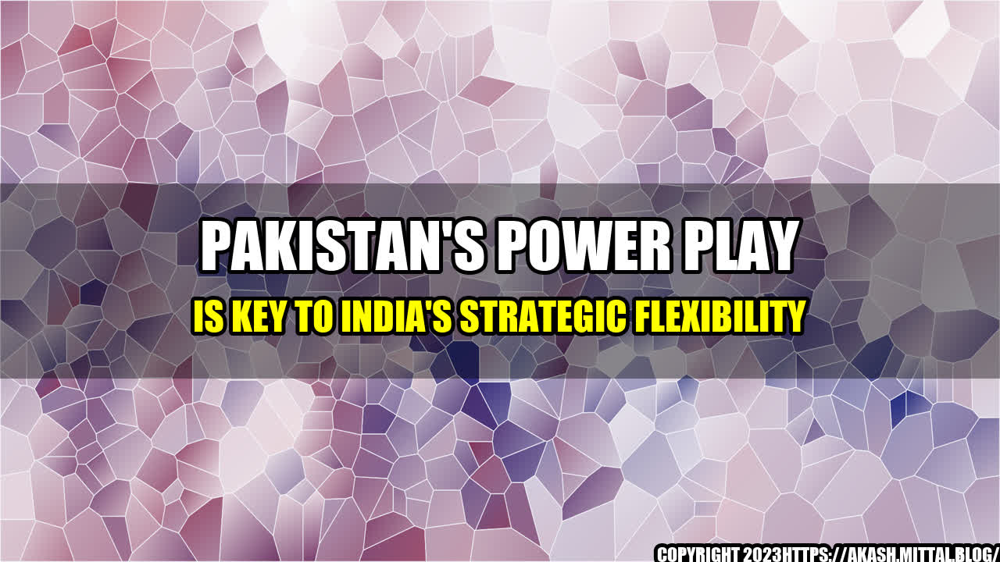

Pakistan's Power Play is Key to India's Strategic Flexibility
India and Pakistan have been rivals since their independence from Britain in 1947, and their relationship has been marked by wars, border disputes and proxy conflicts. The two nuclear-armed nations share a long and porous border, a complex history and a deep mistrust of each other's intentions. India sees Pakistan as a state sponsor of terrorism that harbors militants who launch attacks on Indian soil, while Pakistan accuses India of human rights violations and interference in its internal affairs.
However, despite their differences, India and Pakistan have a shared interest in maintaining stability and preventing a catastrophic war. Both nations have realized that their security and prosperity are intertwined and that they cannot afford to ignore each other.
In this context, Pakistan's power play is key to India's strategic flexibility. Pakistan's military and intelligence establishment have a significant influence on the country's foreign policy and domestic politics, and India needs to take this into account when crafting its own foreign policy objectives.
Examples with Case Studies
- In 2008, Pakistan-based militants carried out a series of coordinated attacks in Mumbai, killing 166 people. India accused Pakistan's Inter-Services Intelligence (ISI) agency of masterminding the attacks and demanded that Pakistan take action against the perpetrators. However, Pakistan denied any involvement and said that India had not provided sufficient evidence to prove its claims. The episode led to a diplomatic crisis between the two nations, and it took several years for the relationship to return to normal.
- In 2016, militants attacked an Indian Army base in Uri, Kashmir, killing 19 soldiers. India blamed Pakistan for the attack and launched a diplomatic offensive to isolate Pakistan on the international stage. It also carried out "surgical strikes" on terrorist camps on the Pakistani side of the border. However, Pakistan denied any involvement and accused India of fabricating evidence. The episode further strained the relationship between the two nations, and it remains tense to this day.
- In 2019, tensions between India and Pakistan escalated after a suicide bomber killed 40 Indian paramilitary personnel in Pulwama, Kashmir. India blamed Pakistan for the attack and carried out air strikes on a terrorist training camp in Balakot, Pakistan. Pakistan retaliated by shooting down an Indian fighter jet and capturing its pilot, leading to a military standoff. The crisis was defused after international pressure and mediation by third-party countries.
These examples show how Pakistan's actions have a direct impact on India's foreign policy and strategic flexibility. India has to consider the possibility of Pakistan's involvement in any terrorist attack or military provocation and be prepared for different scenarios.
- Pakistan's power play is a major factor in India's strategic flexibility.
- India needs to take into account Pakistan's military and intelligence establishment when crafting its foreign policy objectives.
- A stable and peaceful relationship between India and Pakistan is in the best interest of both nations and the region as a whole.
India and Pakistan have a long way to go before they can achieve a lasting peace, but they have to start somewhere. Both nations should engage in a dialogue and find ways to address their differences without resorting to violence or aggression. The international community can play a constructive role in this process by providing support, assistance and mediation where necessary.
References
- India Today: 26/11 Mumbai terror attacks: How the events unfolded
- BBC: India base attack: Is Pakistan being isolated?
- The Guardian: Indian paramilitary convoy hit by blast in Kashmir
Hashtags
- #IndiaPakistanRelations
- #PakistanPowerPlay
- #StrategicFlexibility
- #PeacefulCoexistence
SEO Keywords
- Pakistan's Power Play
- India's Strategic Flexibility
- India-Pakistan Relations
- Military and Intelligence Establishment
- Foreign Policy Objectives
- Stable and Peaceful Relationship
- International Community
- Dialogue and Diplomacy
Curated by Team Akash.Mittal.Blog
Share on Twitter Share on LinkedIn